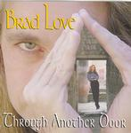

Home Artist links Label link

Brad Love - Through Another Door
| Artist: | Brad Love |
| Title: | Through Another Door |
| Label: | Song Haus Music 65582-55025-2 |
| Length(s): | 46 minutes |
| Year(s) of release: | 2002 |
| Month of review: | [09/2002] |
Line up
Brad Love - vocals, piano, bass, acoustic guitar
Troy Warren Jr. - drums, percussion
Jason Husbands - electric guitar
Sarah Husbands - violin
Tracks
| 1) | Perfect World | 4.04
|
| 2) | Annie Annie | 4.44
|
| 3) | Serious Games | 4.55
|
| 4) | Darkness | 3.24
|
| 5) | I Do | 4.45
|
| 6) | All Over Now | 4.13
|
| 7) | Remember Me | 4.21
|
| 8) | Can't Say No | 3.59
|
| 9) | Techno Toccata | 1.22
|
| 10) | Simple Answer | 5.11
|
| 11) | Between Us | 3.16
|
| 12) | Home | 2.01
|
Summary
I reviewed, one might say celebrated, Aviary's release only a few months
before and now lead singer Brad Love releases a solo disc (his second in fact,
but I am not familiar with the other one which was released in the eighties).
None of the other old Aviary guys are present, in fact the album is dedicated
to the memory of their bass player, Ken Steimonts.
The music
Compared to the over-the-top AORish pop of Aviary, this album is in a way
a much sweeter affair. However, Brad Love has not gone the way of sugary pop,
because, as has happened to music in general, a few rowdy guitars get thrown
in as well. On Aviary the vocalists often obtained heights as if singing on
laugh gas, but this time around the vocals are in a lower register most
of the time. Perfect World is the rocky opener and forms an organic and quite
groovy whole with good melodies that stick. The overall feel might be somewhat
like AOR, but not in the way of stadium rock bands, mind you. A bit of organ gets
thrown in, and if you are afraid of datedness: don't be. Some of you probably
think this is not prog and maybe on the sticky side, but I happen to think it's
good.
After piano and keys in the beginning, Annie Annie has a bit of an easy-going
pace. For the remainder you are treated to hammered piano, echoey and energetic
vocals in noisy pop/rock with variation in the vocal parts. It shows in these
two tracks already that Love has a well-defined compositional style
and although things have changed, the music is a recognizable descendent of
Aviary.
Serious Games is melodically very strong, quieter than the previous two, and
a bit clinging. Notwithstanding, the vocals are sensitive and the song
has overall a nicely intimate feel. On Darkness the rock returns akin
to Sniff 'n' the Tears. I Do is a bit shaky with its shakers and piano and
overall too easy-going gait.
All Over Now is back to catchy poprock, while the loud Remember Me
is more thoughtful. The song also harbours a folky fishersong passage,
the guitar work is etheric somewhat in the style of U2's The Edge and
added to this some strings and a classical/symphonic turn of events later on.
Unfortunately, it is aborted before it has the chance to really take off.
Techno Toccata is a rather different affair, almost like a track off a
Cuneiform album. Lots of piano, lots of dissonance.
On Simple Answer, Aviary is close again and makes for a strong composition
turning for the orchestral later on. On Between Us Lvoe combines a dancing
piano melody with a tea5 in his voice, while Home is the somber closer.
Conclusion
A really likable album, maybe a bit on the accessible side. Compositions,
performance and melodies are overall good to very good. Of course subjects like
love don't do so well in the progrock community, so if you find some of the
parts a bit sugary, I wish you'd take those for granted (believe me, there
are not as many as the cover might indicate). The songs have Brad Love's
identity written all over them, and are recognizably from our time, well crafted
and not shallow.
© Jurriaan Hage